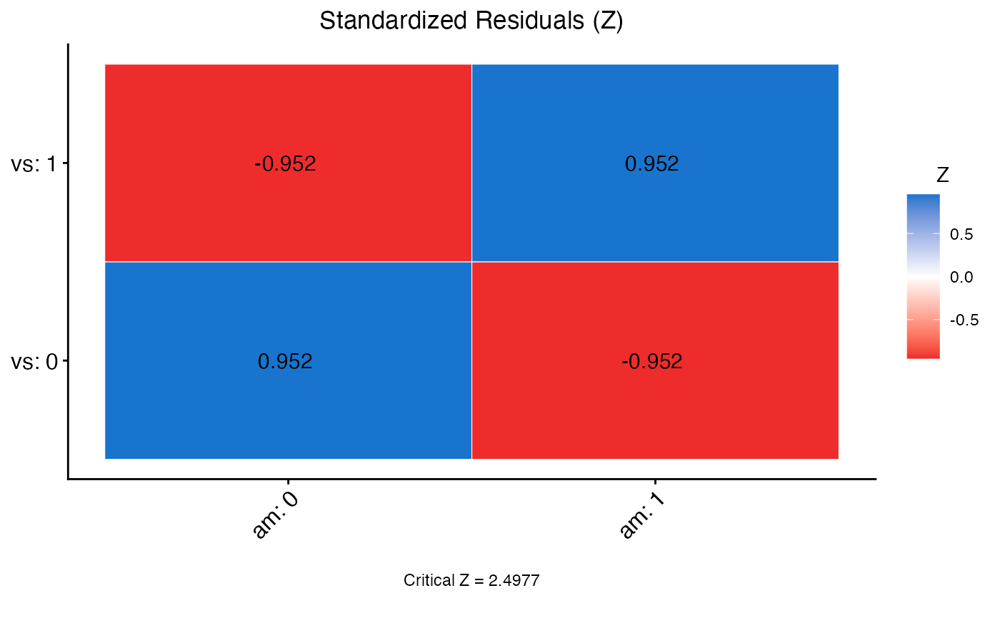

This function plots a cell-by-cell chart (chiplot) on a given matrix of standardized residuals (Z) from a chi square test.
Usage
chiplot(
zmat,
method = "square",
type = "full",
ggtheme = ggplot2::theme_classic(),
title = "",
show.legend = TRUE,
legend.title = "Z",
colors = c("dodgerblue3", "white", "firebrick2"),
outline.color = "white",
lab = FALSE,
lab_col = "black",
lab_size = 4,
p.mat = NULL,
z.crit = NULL,
sig.level = 0.05,
insig = pch,
pch = 4,
pch.col = "black",
pch.cex = 5,
tl.cex = 12,
tl.col = "black",
tl.srt = 45,
digits = 2,
as.is = FALSE
)Arguments
- zmat
a matrix of standardized residuals, extracted from the chi square test, to visualize.
- method
the type of visualization used in plot (default set to
"square").- type
the section of the plot that will be displayed (default set to
"full").- ggtheme
ggplot2function to set the theme of the plot (default set toggplot2::theme_classic()).- title
title of the plot, extracted from the chi square test.
- show.legend
logical (default set to
TRUE), to display legend on plot.- legend.title
title of the legend (default set to
"Z").- colors
a vector of 3 colors for negative, zero, and positive residuals.
- outline.color
the outline color of the square (default set to
"white").- lab
logical (default set to
FALSE, but set toTRUEif extracted from chi square test), to display standardized residual (Z) value (and significance stars) on for each cell comparison on the plot.- lab_col
color of text displayed in each cell comparison for standardized residual (Z) value when
lab = TRUE(default set to"black").- lab_size
size of text displayed in each cell comparison for standardized residual (Z) value when
lab = TRUE(default set to4).- p.mat
a matrix of p-values for each standardized residual (Z) value comparison, extracted from chi square test.
- z.crit
the critical Z value for the comparison of standardized residuals (Z), extracted from the chi square test.
- sig.level
the alpha value used to assess significance (default set to
0.05).- insig
glyphs to add on non-significant standardized residual (Z) values (default set to
"pch").- pch
glyphs added to non-significant standardized residual (Z) values (default set to
4).- pch.col
color of pch glyphs (default set to
"black").- pch.cex
size of pch glyphs (default set to
5).- tl.cex
size of text label for each category name for both variables (default set to
12).- tl.col
color of text label for each category name for both variables (default set to
"black").- tl.srt
string rotation of text label for each category name for the variable on the x-axis (default set to
45).- digits
the number of decimal digits to be displayed in the plot (default set to
2, but set to3if extracted from chi square test).- as.is
determines how to handle dimnames, either left as strings (if set to
TRUE), or converted (default set toFALSE).
Value
This function returns the chi square plot of standardized residuals for categories of var1 by var2 in data frame df, all of which are extracted from the chi square test.
Examples
data <- mtcars
x2 <- chi.sq(data,vs,am,post=TRUE)
chiplot(zmat = x2$z_mat,p.mat = x2$p_z_mat,z.crit = round(x2$z_crit, 4),
outline.color = "white",lab = TRUE,digits = 3)
#> Warning: `aes_string()` was deprecated in ggplot2 3.0.0.
#> ℹ Please use tidy evaluation idioms with `aes()`.
#> ℹ See also `vignette("ggplot2-in-packages")` for more information.
#> ℹ The deprecated feature was likely used in the vannstats package.
#> Please report the issue at
#> <https://github.com/burrelvannjr/vannstats/issues>.
